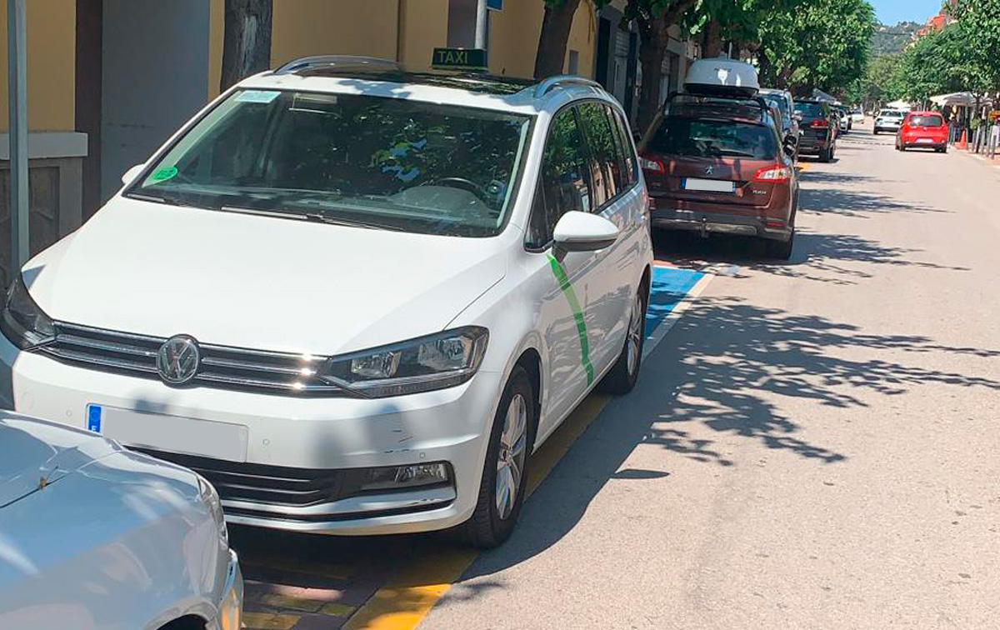

Quiénes Somos
Ofrecemos un servicio de taxi confiable y rápido para todas tus necesidades de transporte en la ciudad. Estamos disponibles las 24 horas del día, los 7 días de la semana, garantizando siempre puntualidad y comodidad.
Nuestros Servicios
Desde el transporte urbano hasta el servicio aeroportuario, estamos listos para llevarte a tu destino de manera segura y rápida. ¡Reserva hoy tu taxi con nosotros!
Teléfono: +34 650 363 418
Correo electrónico: taxi24.jonquera@gmail.com
Dirección: Carrer Carles Bosh Trinxeria 8 La Jonquera 17700 Girona